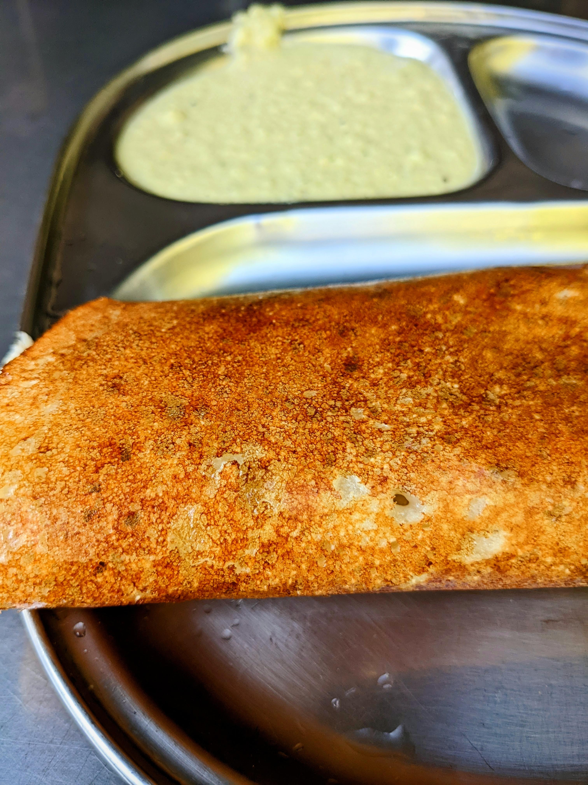
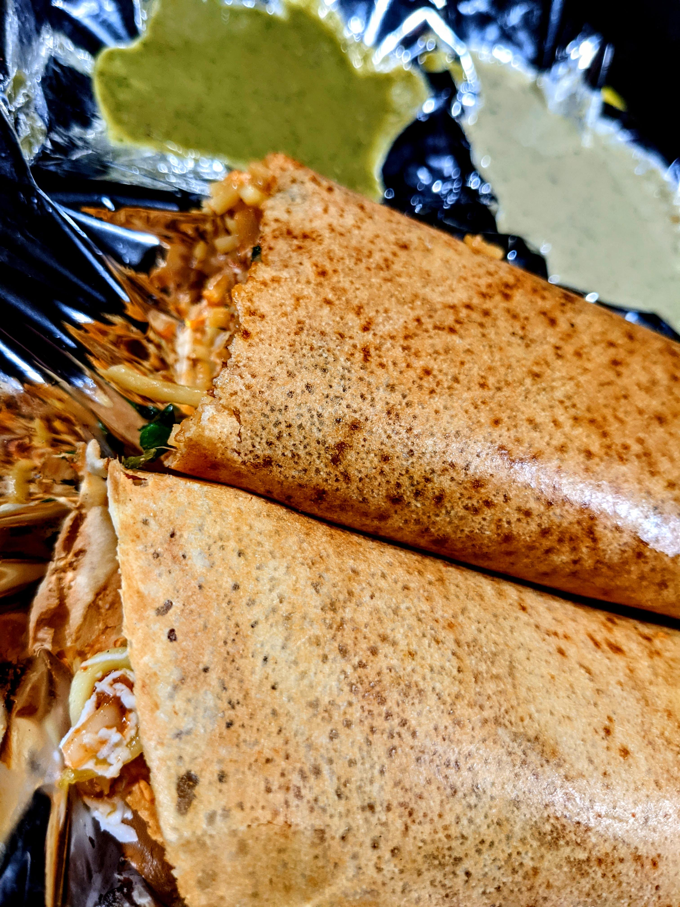

Masala Dosa

One of the most famous and loved variations of the dosa is Masala Dosa. Though masala literally translates to “spices”, the ‘masala’ in masala dosa refers to a flavoured mashed potatoes. This masala is usually placed in between the “flap” of the dosa.
Slowly, people started replacing this potato stuffing with other ingredients such as paneer, mushroom, etc. to create variations with what they loved and these started getting named in a similar way like paneer masala dosa, mushroom masala dosa etc, although these variations are less found in restaurants and more of a homely dish.
There are a few stories about the origin of the addition of masala to dosa. One story about how the masala started being stuffed in the dosa says that in many places, the Brahmin’s were the ones who cooked the food. On several occasions, the dosa was served along with Pallya, a potato curry which is slightly wetter than the normal potato masala. What happened at times was that the cooks ran out of potatoes, so they would add onions to the dish to increase its quantity. But since Brahmins were not allowed to eat onions and it was easy to spot onions in a dish, they hid the masala in between the flaps of the dosa so that they wouldn’t get caught and hence this custom of stuffing he masala in between the dosa instead of serving separately began.
Masala dosa is a lot more fulfilling than the plain dosa as potatoes do add a certain heft to the food. The kind of variation as mentioned too creates more liking towards this dish as it can be easily customised to one’s liking. Following this fulfillingness, mouth-watering taste and its nutritional value, the masala dosa is one of the best breakfasts that one can have. So even out of the rare times we go to a place that serves benne dosa, I end up having to eat idli or vada and not be able to relish the main dish.
Another dish very close to the Masala Dosa is the Mysore Masala Dosa. The main difference (or many times the only difference) is that Mysore Masala Dosa comes with a spicy red paste applied to the dosa. This is a beloved addition for all the spice lovers. This dosa is also usually thin and crispy.
Benne Dosa

Benne Dosa literally translates to butter dosa, and at first glance it seems as though what is so special about it, it’s just butter instead of ghee, both of which are milk products, but once you get into a restaurant that serves only benne dosa, you’ll be teleported to a different world, especially those who love butter. Even though the only major difference is butter, the white butter is added so generously that it is definitely not for the weak hearted (metaphorically and maybe even literally), and its aroma fills the place. It is generally eaten for breakfast because it is much heavier than the normal dosa, and it also requires that overnight hunger at times.
Benne Dosa is also often referred to as "Davangere Benne Dosa". The term Davanagere is added to the name of the dish because that is where benne dosa originated. So now a lot of places that serve only benne dosa like to attach the name Davanagere to their name to give some sense of authenticity.
The potato masala called Pallya is served separately and is often slightly blander than the masala
we get with masala dosa, and is served with coconut chutney. The batter too often has the extra
ingredient of puffed rice.
Now the thing is that for me personally, I can't eat many kinds of butter, ghee and cheese, there is
often this weird smell that I get from some of these which makes the item unpalatable for me.
99 Dosa

As the name simply suggests, these stalls claim to serve 99 varieties of dosa, although some places do not serve 99 but I don’t think there is any necessity to count it. However the place I went to did have 99 varieties listed in the menu. It is pretty obvious that there isn’t much difference in many varieties. They’re just mix-and-match. The ingredient box, has about 12 ingredients, few of which are just veggies so they are added to almost all types of dosas.
These are roadside stalls so obviously there isn’t any guarantee of hygiene, but these places are visited for their taste. Although honestly speaking, at some stalls there isn’t much difference in the tastes of the different dosas, but they definitely taste very different from the other “regular” dosas that we get in restaurants.
All the stalls that I have been to over the years serve two kinds of chutney, coconut chutney and mint/tomato chutney and they are all absolutely delicious and complements the flavourful dosa very well.
This is definitely something worth trying, and I guarantee you that you’ll love it, and if you
don’t, you probably chose a dosa that doesn't suit your palette. Just like everyone does, it is
better to go to these places in groups so that you can order a couple of different dosas and try
them all.